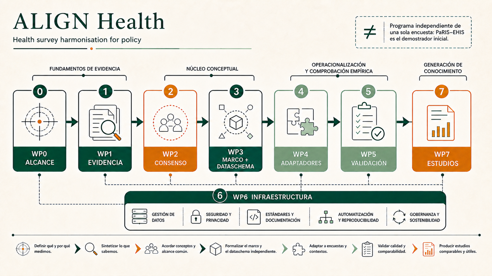

Research programme
Ocho paquetes, una cadena de decisiones.
Los paquetes no son líneas paralelas: cada gate limita qué puede comenzar después. Los estados describen planificación provisional, no compromisos de ejecución.

Dependencias
Del alcance a la aplicación.
WP0Alcance
WP1Evidencia
→WP2Consenso
→WP3Marco
→WP4Adaptadores
→WP5Validación
→WP6Infraestructura
→WP7Estudios
Fichas seleccionables
Explorar cada paquete.
Selecciona un WP o usa las flechas del teclado
Cargando paquetes…